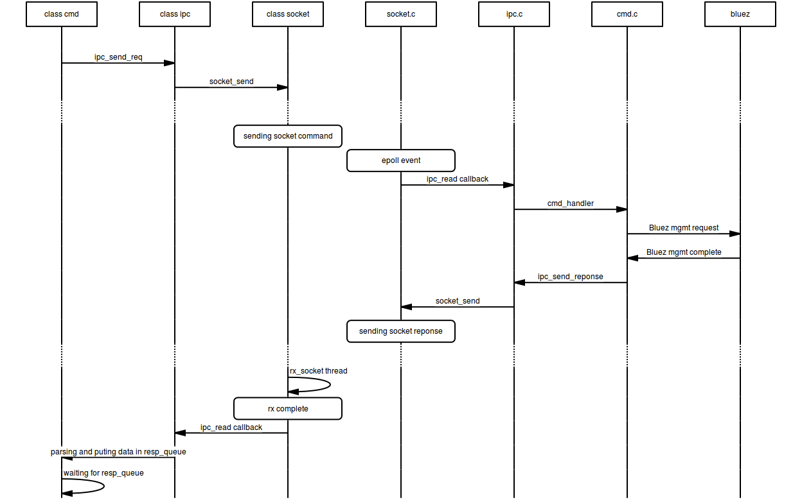

Bluetooth Low Energy Daemon - btled¶
Motivation¶
The origin of the btled server/client application comes from a personnal desire to gathers into one interface most of powerful features offers by Bluez stack.
Bled is based on the new D-bus GATT API.
Design¶
Btled component is inspired by a whole open source project, but is written focusing on speed, simplicity, and flexibility.
